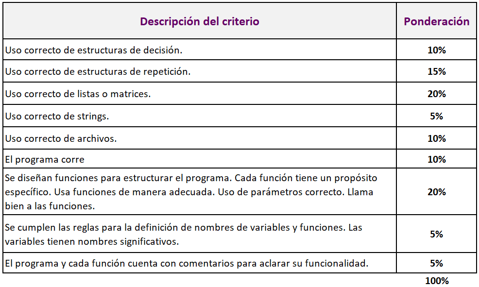

Incorpora a tu proyecto listas o
matrices y strings
 Modalidad
Modalidad
Individual.
 Objetivos
Objetivos
-
Demostrar el manejo
adecuado de listas/arreglos.
-
Demostrar el manejo adecuado de listas anidadas o
matrices.
-
Demostrar el manejo adecuado de
strings o cadenas de caracteres.
-
Demostrar competencias en estilo, funcionalidad y
pruebas.
 Instrucciones
Instrucciones
- Incorpora a tu proyecto listas/arreglos.
Retoma el tema que seleccionaste y expande tu proyecto para que incluya el
manejo de listas. Puedes agrupar muchas variables o cambiar funciones que
antes usaban una variable para que ahora trabajen con listas.
- Incorpora a tu proyecto listas anidadas o
matrices. Retoma el tema que seleccionaste y expande tu proyecto
para que incluya el manejo de listas anidadas o matrices. Puedes usar
matrices para agrupar datos de forma práctica o para hacer representaciones
espaciales en 2 dimensiones.
- Incorpora a tu proyecto strings. Retoma el tema que seleccionaste y expande tu
proyecto para que incluya el manejo de cadenas de caracteres. Puedes
modificar partes anteriores del código para proveer interfaces más usables y
personales, o incorporar nueva funcionalidad.
- En estos programas se checa a detalle que
cumplas con las reglas de estilo, estructura, funcionalidad y pruebas.
- Para poder demostrar tus competencias en los temas
de listas y listas anidadas se espera al menos un programa con la misma
complejidad de los laboratorios y tareas de estos temas.
- Los casos de prueba deben de estar
documentados correctamente en los comentarios.
- Explica en comentarios qué es lo que debe hacer el
programa.
- Explica en comentarios qué es lo que hace cada
función, con el fin de aclarar su funcionalidad.
- Es posible que no todos los temas quepan en tu
proyecto pero se espera que al menos incluyas el 80 % de los temas vistos en el
curso.
 Rúbrica de evaluación
Rúbrica de evaluación

- Si usan diccionarios se les darán 5
puntos extras sobre la calificación de su proyecto.
Especificaciones de entrega
- Guarda el avance de tu proyecto con el nombre:
P2_Matrícula.py.
- Entrega tu archivo en Canvas, en
la sección de Modulos > Proyecto final > Incorpora listas
o
matrices y strings.
- No se aceptarán avances del proyecto final por
correo electrónico, ni después de la fecha y horario límite.
Instrucciones para enviar tus archivos por Canvas:
-
Haz clic en el botón de
Entregar tarea.
-
En el fólder de
Carga del archivo, haz clic en el botón de
Examinar y localiza el archivo en Python con extensión
P2_Matrícula.py. Por ejemplo: P2_1293231.py
-
Cuando hayas terminado de subir tu archivo, haz clic en el botón de
Entregar tarea y listo!!
 Recursos
Recursos